Kanji część 3
Kontynuujemy naukę japońskich znaków kanji. Pamiętaj o metodzie, którą stosujemy w tym kursie:
- Zapamiętać lub ułożyć własną ciekawą historyjkę, która opowiada o danym znaku
- Wielokrotnie zapisywać ten znak w zeszycie ćwiczeń
万
3
dziesięć tysięcy; bardzo dużo
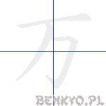
on'yomi
マン, バン
kun'yomi
よろず, かず, ま, ゆる
Komentarz
Element pod górną kreską 一, czyli 勹 oznacza "związać". Sama górna kreska może przyjąć znaczenie "sufitu". Możesz użyć tych dwóch elementów do swojej historii. Możesz też zapamiętać ten znak jako jedna kreska, czyli jedynka oraz odwrócona o 180° cyfra 4 symbolizująca cztery zera wchodzące w skład 10 000.
Przykładowe wyrażenia
| kanji | hiragana | znaczenie |
|---|---|---|
| 万 | まん | dziesięć tysięcy; wszystko, ogrom |
| 万一 | まんいち | przez przypadek, szczęśliwy traf |
| 一万円 | いちまんえん | 10000 jenów |
| 万全 | ばんぜん | doskonałość, perfekcja |
| 万歳 | ばんざい | niech żyje! sto lat! |
| 万能 | ばんのう | wszechstronny, wszechmogący |
刀
2
miecz, katana
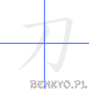
on'yomi
トウ
kun'yomi
かたな, そり, き, ち, と, わき
Komentarz
To jest kanji na japoński miecz używany przez samurajów. Nie jest zbytnio podobne do miecza, za to można skojarzyć jego kształt z pistoletem. Gdy powiążesz te dwa przedmioty swoją historyjką, na pewno zapamiętasz ten znak.
Czasami, gdy występuje jako część innego kanji, przyjmuje on postać 刂 .
Czasami, gdy występuje jako część innego kanji, przyjmuje on postać 刂 .
Przykładowe wyrażenia
| kanji | hiragana | znaczenie |
|---|---|---|
| 刀 | かたな | miecz, katana |
| 日本刀 | にほんとう | miecz japoński |
| 刀身 | とうしん | ostrze miecza |
| 大刀 | だいとう | długi miecz |
| 小刀 | こがたな | krótki miecz; scyzoryk |
| 剃刀 | かみそり | brzytwa |
分
4
minuta; część; dzielić; rozumieć
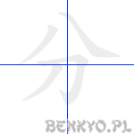
on'yomi
ブン, フン, ブ
kun'yomi
わ.ける, わ.かる, いた, わけ
Komentarz
W dolnej części tego kanji mamy katanę, a w górnej coś, co może przypominać ósemkę, czyli 八 czy też znak na "wejście" 入 , którego kreski zostały rozdzielone na dwie części - przecięte ostrą jak brzytwa kataną. Czy potrafisz sobie wyobrazić, jak ta sama katana tnie godzinę na pojedyncze minutki?
Przykładowe wyrażenia
| kanji | hiragana | znaczenie |
|---|---|---|
| 分 | ふん | minuta |
| 分 | ぶん | część |
| 三分の二 | さんぶんのに | 2/3 (dwie części z trzech) |
| 分かる | わかる | rozumieć; znać |
| 自分 | じぶん | sam (自分で → samodzielnie, samemu; osobiście) |
| 部分 | ぶぶん | część (całości) |
| 十分 | じゅっぷん | dziesięć minut |
| 十分 | じゅうぶん | wystarczająco; zauważ, że wyraz złożony z tych samych kanji potrafi mieć dwa różne znaczenia i być odczytywany na różne sposoby. Nie ułatwia to całej sprawy, ale od czego mamy nasze historyjki! Czy dziesięć minut to wystarczająco dużo czasu na zapamiętanie tych dwóch wyrazów? |
| 分析 | ぶんせき | analiza |
| 分ける | わける | dzielić, rozdzielać |
切
4
ciąć
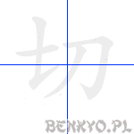
on'yomi
セツ, サイ
kun'yomi
き.る, き.り, き.れる,きつ, きり
Komentarz
Cyfra 7 七 po lewej i katana 刀 po prawej. Oglądałeś film pt. "Siedmiu samurajów" Kurosawy? Jeżeli jeszcze nie, musisz koniecznie zobaczyć, jak potrafią ciąć ich ostre katany!
Przykładowe wyrażenia
| kanji | hiragana | znaczenie |
|---|---|---|
| 切る | きる | ciąć |
| 大切 | たいせつ | ważny, istotny |
| 親切 | しんせつ | miły, grzeczny |
| 思い切る | おもいきる | zdecydować się, podjąć decyzję |
| 締め切り | しめきり | termin końcowy, "deadline" |
| 切手 | きって | znaczek pocztowy |
力
2
siła, moc
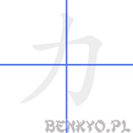
on'yomi
リョク, リキ, リイ
kun'yomi
ちから, じから, つとむ
Komentarz
Spróbuj wyobrazić sobie kulturystę, prężącego swój ogromny biceps pokazująć widowni swoją siłę. A jeżeli uda Ci się zapamiętać wyraz na tą siłę, czyli ちから, to możesz też skojarzyć, że środkowa sylaba zapisana katakaną ma identyczny kształt: カ!
Przykładowe wyrażenia
| kanji | hiragana | znaczenie |
|---|---|---|
| 力 | ちから | siła, moc |
| 努力 | どりょく | wysiłek |
| 協力 | きょうりょく | współpraca; kolaboracja |
| 体力 | たいりょく | tężyzna, siła fizyczna |
| 気力 | きりょく | siła woli; witalność, siła ducha |
| 力持ち | ちからもち | siłacz, silny człowiek |
| 能力 | のうりょく | zdolność (robienia czegoś) |
男
7
mężczyzna
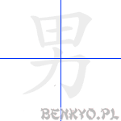
on'yomi
ダン, ナン
kun'yomi
おとこ, お, み
Komentarz
To bardzo łatwe - widzimy pracującą w polu 田 postać, używającą wszystkich swoich sił 力aby wyżywić swoją rodzinę. To jest prawdziwy mężczyzna! Jeżeli wolisz, żeby 田 przyjęło znaczenie "mózg" - nie ma problemu, wtedy bohater Twojej historii będzie nie tylko silny, ale i mądry!
Przykładowe wyrażenia
| kanji | hiragana | znaczenie |
|---|---|---|
| 男の人 | おとこの人 | mężczyzna |
| 男の子 | おとこのこ | chłopiec |
| 男子 | だんし | chłopiec, młodzieniec |
| 男優 | だんゆう | aktor |
| 男前 | おとこまえ | przystojniak |
千
3
tysiąc
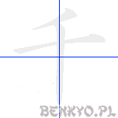
on'yomi
セン
kun'yomi
ち, かず, ゆき
Komentarz
Górna kreska (zwróć uwagę na kierunek pisania!) jest kluczem oznaczającym " kroplę", z kolei w dolnej części widzimy znajomy znak 十, czyli kanji na "10", lub klucz "igła". " Kropla" przyjmuje zwykle mniejszą formę, podobną do apostrofu.
Wyobraź sobie coś, co jednoznacznie kojarzy Ci się z liczbą 1000 i postaraj się ułożyć historyjkę z kroplą i 10 (lub igłą) w roli głównej.
Wyobraź sobie coś, co jednoznacznie kojarzy Ci się z liczbą 1000 i postaraj się ułożyć historyjkę z kroplą i 10 (lub igłą) w roli głównej.
Przykładowe wyrażenia
| kanji | hiragana | znaczenie |
|---|---|---|
| 千 | せん | tysiąc |
| 千秋楽 | せんしゅうらく | końcowy dzień (jakiegoś wydarzenia) |
| 千円 | せんえん | tysiąc jenów |
| 千年 | せんねん | millenium, 1000 lat |
右
5
prawy
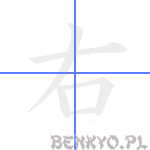
on'yomi
ウ, ユウ
kun'yomi
みぎ, あき, すけ
Komentarz
Lewa część znaku przypominająca do złudzenia katakanę ナ lub kanji na "10" 十z odgiętą ku lewej stronie pionową kreską to klucz oznaczający "przy sobie, przy boku". Wyobraź sobie swojego anioła stróża, który zawsze jest przy Twoim boku, z którego ust dobiega Cię szept: "Bądź prawym człowiekiem, postępuj tak jak nakazuje 10 przykazań!".
Przykładowe wyrażenia
| kanji | hiragana | znaczenie |
|---|---|---|
| 右 | みぎ | prawy (strona) |
| 右手 | みぎて | prawa ręka |
| 右側 | みぎがわ | prawa strona |
| 右党 | うとう | prawicowa partia |
| 右折 | うせつ | zakręt w prawo |
工
3
rzemiosło; konstrukcja
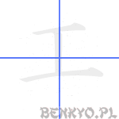
on'yomi
コウ, ク, グ
kun'yomi
もく, たくみ
Komentarz
To kanji wygląda zupełnie jak dwuteownik, czyli stalowa belka na kształt dwóch zetkniętych pionowymi kreskami liter "T". Takie belki używane są do budowania konstrukcji w rzemiośle budowniczym.
Przykładowe wyrażenia
| kanji | hiragana | znaczenie |
|---|---|---|
| 加工 | かこう | wytwarzanie, proces produkcji |
| 大工 | だいく | stolarz |
| 工事 | こうじ | remont |
| 工場 | こうじょう | fabryka |
| 工学 | こうがく | inżynieria |
| 工業 | こうぎょう | przemysł produkcyjny |
| 人工的 | じんこうてき | sztuczny, nienaturalny |
左
5
lewy
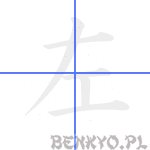
on'yomi
サ, シャ
kun'yomi
ひだり, そ
Komentarz
Choć to przeciwieństwo strony prawej (右), to lewa strona kanji jest identyczna, jednak zamiast "buzi" 口 mamy "konstrukcję": 工. Myślę, że przyda nam się tu znajomość powojennej historii Polski, w którym za czasów socjalizmu (skojarz z lewicą) konstruowano wiele fabryk.
Przykładowe wyrażenia
| kanji | hiragana | znaczenie |
|---|---|---|
| 左 | ひだり | lewy (strona) |
| 左手 | ひだりて | lewa ręka |
| 左側 | ひだりがわ | lewa strona |
| 左党 | さとう | lewicowa partia |
| 左折 | させつ | zakręt w lewo |
了
2
kończyć; pojąć
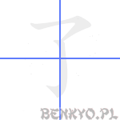
on'yomi
リョウ
kun'yomi
さとる
Komentarz
To kanji ma takie znaczenie jak symbol zwany "ptaszkiem" - oznaczamy nim to, co jest już zakończone, lub zagadnienie, które zdołaliśmy sobie przyswoić i zrozumieć. Teraz zapamiętaj jeszcze tylko sposób pisania tego "ptaszka".
Przykładowe wyrażenia
| kanji | hiragana | znaczenie |
|---|---|---|
| 終了 | しゅうりょう | koniec |
| 了承 | りょうしょう | zrozumienie, wyrozumiałość (jak w "prosimy o wyrozumiałość" w napisie na zepsutej windzie) |
| 完了 | かんりょう | zakończenie, konkluzja |
| 了解 | りょうかい | zrozumienie (np. po otrzymaniu polecenia od szefa "tak, zrozumiałem") |
子
3
dziecko
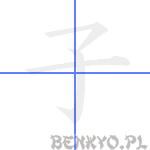
on'yomi
シ, ス, ツ
kun'yomi
こ, -こ, ね
Komentarz
Mamy tu połączenie znaku 了 i 一. Możemy skojarzyć to z sytuacją społeczną w Chinach: jedno dziecko i koniec!
Przykładowe wyrażenia
| kanji | hiragana | znaczenie |
|---|---|---|
| 子 | こ | dziecko |
| 子供 | こども | dziecko, dzieci |
| 女子 | じょし | dziewczynka |
| 男子 | だんし | chłopiec, młodzieniec |
| 息子 | むすこ | syn |
| 電子 | でんし | elektron, elektroniczny (np. e-mail: 電子メール) |
女
3
kobieta
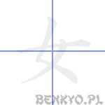
on'yomi
ジョ, ニョ, ニョウ
kun'yomi
おんな, め, おな, た, つき, な
Komentarz
Te trzy kreski mają odwzorowywać siedzącą kobietę. Zwróć uwagę na kolejność stawiania kresek! Może Ci w tym pomóc wyraz "kunoichi" oznaczający kobietę-ninja. Można zapisać ten wyraz tak: くノ一 - hiragana く, katakana ノ i kanji 一.
Przykładowe wyrażenia
| kanji | hiragana | znaczenie |
|---|---|---|
| 女性 | じょせい | dziewczyna, kobieta |
| 女の人 | おんなのひと | kobieta |
| 女の子 | おんなのこ | dziewczynka |
| 彼女 | かのじょ | dziewczyna, sympatia |
| 女優 | じょゆう | aktorka |
好
6
lubić
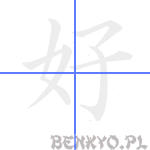
on'yomi
コウ
kun'yomi
この.む, す.く, よ.い, い.い, こ, よし
Komentarz
Tak jak kobiety 女 lubią dzieci 子, tak to kanji oznacza coś, co się lubi, czasami nawet bardzo.
Przykładowe wyrażenia
| kanji | hiragana | znaczenie |
|---|---|---|
| 好き | すき | lubić; ulubiony - pamiętaj, że w japońskim nie jest to czasownik, a "na"-przymiotnik |
| 大好き | だいすき | ukochany, ulubiony - mocna wersja "lubić". Tego wyrazu użyjesz do kogoś, kogo kochasz. |
| 友好 | ゆうこう | przyjaźń |
| 好み | このみ | smak, wybór、preferencja |
心
4
serce
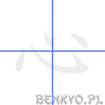
on'yomi
シン
kun'yomi
こころ, -ごころ
Komentarz
Zapamiętaj to kanji jako serce - organ oraz serce - stan ducha. Jako składowa innych kanji będzie się ono pojawiało w różnych formach w zależności, w której części wystąpi.
Przykładowe wyrażenia
| kanji | hiragana | znaczenie |
|---|---|---|
| 心 | こころ | serce, duch |
| 中心 | ちゅうしん | środek, centrum (np.miasta) |
| 心配 | しんぱい | zmartwienie |
| 心臓 | しんぞう | serce (część ciała) |
| 安心 | あんしん | ulga |
| 決心 | けっしん | determinacja |
| 心理学 | しんりがく | psychologia |
思
9
myśleć
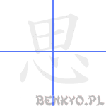
on'yomi
シ
kun'yomi
おも.う, おもえら.く, おぼ.す
Komentarz
Niektórzy sądzą, że powinieneś myśleć nie tylko mózgiem, ale i sercem. Choć myślenie mózgiem powinno niewątpliwie być górą (dlatego jest w górnej części kanji).
Przykładowe wyrażenia
| kanji | hiragana | znaczenie |
|---|---|---|
| 思う | おもう | myśleć (jak np. "myślę, że...") |
| 意思 | いし | zamiar, intencja |
| 思い出 | おもいで | wspomnienie |
| 思い出す | おもいだす | przypomnieć sobie |
| 思想 | しそう | myśl, idea |
| 不思議 | ふしぎ | dziwny, tajemniczy, cudowny |
白
5
biel
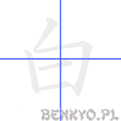
on'yomi
ハク, ビャク
kun'yomi
しろ, しら-, しろ.い, あき
Komentarz
Jak kropla na górze i słońce na dole mogą kojarzyć się z bielą? Cóż, jeżeli uważałeś na lekcji fizyki to na pewno wiesz, że naturalne światło pochodzące od słońca zawiera całe spektrum kolorów, które połączone ze sobą w jedną "kroplę" światła daje idealną biel.
Przykładowe wyrażenia
| kanji | hiragana | znaczenie |
|---|---|---|
| 白い | しろい | biały (kolor) |
| 白人 | はくじん | człowiek rasy białej |
| 白紙 | はくし | czysta kartka |
| 自白 | じはく | spowiedź, wyznanie |
| 白血病 | はっけつびょう | białaczka |
| 白鳥 | はくちょう | łabędź |
百
6
sto
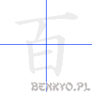
on'yomi
ヒャク, ビャク
kun'yomi
もも, お, ど, どう, なり, ひゃっ, ひゅく
Komentarz
Japończycy nazywają 99 rok życia "rokiem białym". Jeżeli do tego dodamy jeszcze jeden rok, otrzymamy okrągłe 100. Sto lat!
Przykładowe wyrażenia
| kanji | hiragana | znaczenie |
|---|---|---|
| 百 | ひゃく | sto |
| 百万 | ひゃくまん | sto-dziesięciotysięcy, czyli milion |
| 百点 | ひゃくてん | 100 punktów, maksymalny wynik |
| 百科事典 | ひゃっかじてん | encyklopedia |
| 百姓 | ひゃくしょう | chłop, farmer |
石
5
kamień
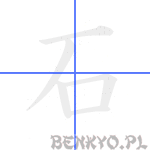
on'yomi
セキ, シャク, コク
kun'yomi
いし, いさ, いす, いわ, し, せっく, と
Komentarz
Przy okazji zapamiętywania tego znaku poznamy kolejny klucz, który sam w sobie nie stanowi znaku kanji, za to czasami wchodzi w skład innych. 厂 przyjmie znaczenie "klif, urwisko", który w przypadku znaku na kamień przyjmie nieco inny kształt - druga kreska wychodzi ze środka pierwszej. Skoro już możesz wyobrazić sobie klif, pod którym jest wejście do tajemnej jaskini, to zapewne widzisz ten wielki kamień, którym wejście jest szczelnie zamknięte. Czyżby to sezam、w którym ukryto skarby?
Przykładowe wyrażenia
| kanji | hiragana | znaczenie |
|---|---|---|
| 石 | いし | kamień |
| 石炭 | せきたん | węgiel |
| 石油 | せきゆ | olej, ropa |
| 石橋 | いしばし | kamienny most |
| 宝石 | ほうせき | biżuteria, kamień szlachetny, klejnot |
| 石垣 | いしがき | mur kamienny |
| 石鹸 | せっけん | mydło |
行
6
iść; odbywać się, rząd (np. liter)
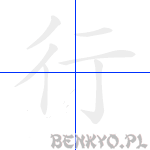
on'yomi
コウ, ギョウ, アン
kun'yomi
い.く, ゆ.く, おこな.う, おこ.なう, いく, ゆき, ゆく
Komentarz
W przypadku tego znaku możesz sobie wyobrazić dwa słupy wysokiego napięcia, przez które przechodzi prąd z elektrowni wprost do Twojego domu. Możesz też, znając znak (nie kanji!) symbolizujący kod pocztowy, czyli 〒, ułożyć swoją historyjkę z tym symbolem związaną.
Przykładowe wyrażenia
| kanji | hiragana | znaczenie |
|---|---|---|
| 行く | いく | iść |
| 行う | おこなう | odbywać się |
| 銀行 | ぎんこう | bank |
| 発行 | はっこう | publikacja, wydanie |
| 旅行 | りょこう | podróż |
| 行 | ぎょう | linia, wers |
| 現行 | げんこう | obecny, bieżący |
| 実行 | じっこう | praktyka, wykonanie |
言
7
mówić
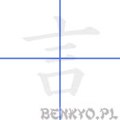
on'yomi
ゲン, ゴン
kun'yomi
い.う, こと, とき
Komentarz
Zapamiętanie tego znaku nie będzie trudne, jeżeli wyobrazisz sobie fale dźwiękowe dobywające się z ust osoby, która mówi. Zwróć uwagę, że w znaku pisanym górna kreska przyjmuje kształt "kropli": `.
Przykładowe wyrażenia
| kanji | hiragana | znaczenie |
|---|---|---|
| 言う | いう | mówić |
| 言葉 | ことば | słowo; język |
| 発言 | はつげん | wypowiedź |
| 言語 | げんご | język |
| 言い方 | いいかた | sposób mówienia |
| 言い訳 | いいわけ | wymówka, wytłumaczenie (swojego postępowania) |
Odwiedzający tę stronę najczęściej szukali:
sto lat po japońsku (309), sto lat po chinsku (166), siła po japońsku (78), 100 lat po japońsku (74), sto lat po japońsku tekst (29), 100 lat po chinsku (22), imiona po chinsku (21), sto lat po koreańsku (15), kurs japońskiego stalowa wola (1), jak po japonsku muwi sie sto lat (1)Poprzednia część tej lekcji: Dialog: chodźmy razem!